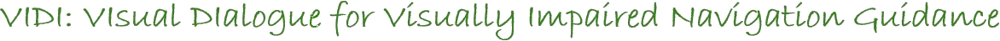

Collect user-centered data
Gather multimodal assistance dialogues with people with visual impairments and their guides.

VIDI is a research project exploring how vision-and-language AI can support visual impaired people (VIP) through ongoing, context-aware navigation dialogue.
VIDI (VIsual DIalogue for visually impaired navigation guidance) aims to advance AI assistance for people with visual impairments. Using video from audio-enabled wearable cameras and the user’s spoken input, the research will explore vision-and-language models that can answer questions, warn about environmental changes, and guide someone toward a target object.
Gather multimodal assistance dialogues with people with visual impairments and their guides.
Develop navigation models that generalize across environments and find obstacle-free routes to objects.
Enable models to use visual context and conversation to assist throughout a task.
Develop quantitative and qualitative ways to assess dialogue quality in assistance tasks.
A coordinated research programme brings together user-centered data collection, navigation, dialogue modelling, a proof of concept, and evaluation.
Coordinate the consortium, ethics, administration and data management across 48 months.
Co-design indoor scenarios and collect dialogues with 25 visually impaired participants and their guides, subject to ethics approval.
Study generalizable navigation and planning methods for reaching objects in diverse environments.
Develop models that connect long-form visual understanding with conversation, grounding and task planning.
Plan a device-to-model pipeline combining visual input, speech recognition, navigation and dialogue models, and spoken output.
Evaluate the prototype’s utility and usability with approximately 15 participants using quantitative and qualitative methods.
The data collection is planned for indoor, semi-realistic settings, including the Maison Intelligente de Blagnac and Orange Innovation in Lannion. The project’s methods may inform outdoor applications as well.
VIDI investigates how assistance can stay responsive as the scene changes and a task unfolds. Its research hypotheses emphasize representative user-centered data, robust navigation, and dialogue that can clarify, plan and adapt.
A guide may answer, ask for clarification, or proactively warn about a change; the user can also initiate or redirect the exchange.
The system should establish what it sees, what the person means, and whether a direction or object has been understood.
Models will be studied for their ability to generalize, handle dynamic environments and complete multi-step guidance tasks.
The project plans to share software, models, datasets and evaluation resources in line with data governance requirements.
Coordinated by Lina Rojas-Barahona (Orange), VIDI combines expertise in dialogue, computer vision, navigation, accessibility and human evaluation.